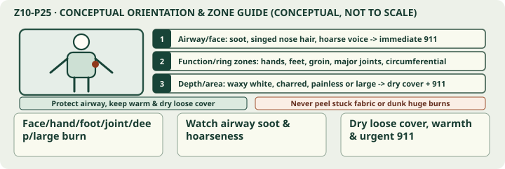

Z10-P25 · Wilderness medicine · New manuscript
Escalate major, deep, airway, or high-risk-zone burns to emergency care
Identify burn patterns that threaten airways, circulation, function, or life and initiate immediate 911 evacuation.
When it applies · Large burns, deep white/leathery/charred burns, smoke/flame inhalation, or burns involving critical anatomical zones.
Equipment · Clean dry sterile sheets/dressings, ground insulation, blankets, and emergency communication.

Actions
- Call 911 immediately for ANY burn that is large (larger than the patient's palm on high-risk zones or extensive body area), deep (waxy white, brown, charred, or painless), or involves the face, eyes, hands, feet, groin, major joints, or completely encircles a limb/chest.[M07, T02]
- Treat singed nose hairs, soot around the mouth/nose, hoarse voice, coughing, or breathing difficulty after fire/smoke exposure as a potential airway-swelling emergency requiring immediate EMS.[M07, T02]
- Do NOT pull clothing stuck to burned skin and do NOT immerse massive body burns in cold water (which triggers rapid hypothermia); cover loosely with clean dry dressings, insulate against shock, and keep NPO.[M07, M05]
Failure recognition · Dousing a large torso burn repeatedly in cold lake water until the patient develops severe hypothermia, or ignoring hoarse voice after a stove flare-up.[M07, M05]
Verify · Confirm airway sounds/voice are monitored continuously, stuck clothing is left undisturbed, body heat is preserved, and 911/EMS is dispatched.[M07, M05, T02]
Stop or change course · Any hoarseness, breathing labor, circumferential tightness, or shock signs require maximum-priority medical evacuation.[M07, M05, T02]
Evidence and editorial notes
- M05 · NIH / MedlinePlus · Shock (current web edition)
- Section: Recognizing Circulatory Shock and Positioning · Conditions: Injured or ill patient with pale cool clammy skin, rapid weak pulse, confusion, or dizziness
Support: Treat suspected shock as a life-threatening emergency: call 911, control external bleeding, keep the person warm and insulated from cold ground, and do not give food or drink.
Limitations: Field responders cannot diagnose internal hemorrhage or administer IV fluids. · Conflicting evidence: None; reinforces keeping suspected shock patients NPO and warm.
Editorial note: Core shock recognition and stabilization boundary in Z10. · Specialist reviewer: Emergency and wilderness medicine
Primary source · checked 2026-11-24 - M07 · NIH / MedlinePlus · Burns (current web edition)
- Section: Thermal Burn Cooling, Covering, and Severity Escalation · Conditions: Minor vs major thermal burns (flame, scald, contact)
Support: Cool minor superficial burns with cool (not icy) running water, remove constricting rings/clothing not stuck to skin, cover loosely with clean non-stick dressing, and seek emergency care for deep, large, facial, hand, foot, genital, joint, or airway burns.
Limitations: Never apply ice, butter, grease, or ointments to fresh burns, and do not pop intact blisters. · Conflicting evidence: None; aligns with ARC/ABA lay burn first aid.
Editorial note: Establishes burn-cooling limits and automatic clinical-escalation zones. · Specialist reviewer: Burn care and wilderness medicine
Primary source · checked 2026-11-24 - T02 · American Red Cross · First Aid Steps (current web edition)
- Section: First Aid Steps > Call 9-1-1 · Conditions: Lay emergency response to unresponsiveness, abnormal breathing or severe bleeding
Support: Activate EMS and get needed equipment. Follow dispatcher directions and act within training.
Limitations: Remote locations may delay EMS arrival, requiring sustained stabilization after activation. · Conflicting evidence: None; aligns with NPS-E.
Editorial note: Mandates early emergency activation and dispatcher adherence. · Specialist reviewer: EMS and wilderness medicine
Primary source · checked 2026-11-24
Source lineage · NIH MedlinePlus Burns; new manuscript · Classification · New manuscript.